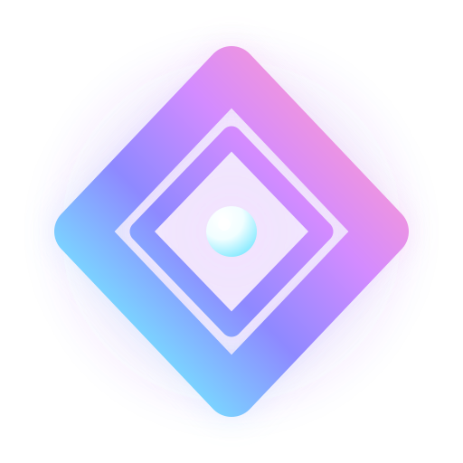
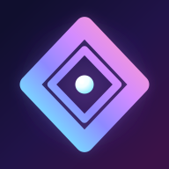
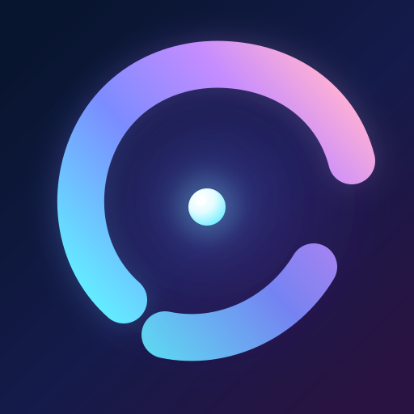
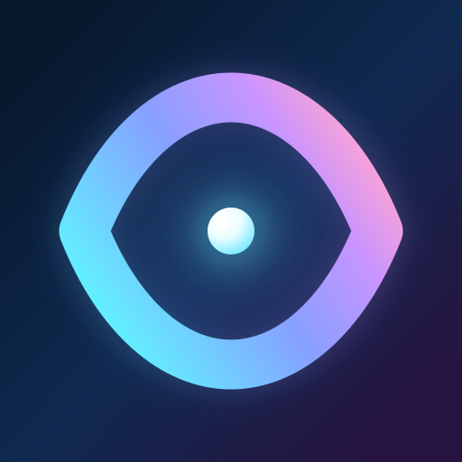

AuraMind · Prof. Aura identity
A quiet signal, every surface.
The old character illustration was too detailed and too literal for a favicon. Prism Aperture is a precise nested-diamond mark with one bright core that survives from a 16px browser tab to an Android adaptive launcher icon.

Prof. Aura · Prism Aperture
Researching strong product marks led to the same pattern used by Linear, Vercel, and leading AI products: one distinctive silhouette, one focal cue, and no decoration that disappears at small sizes. Prism Aperture is now the official Prof. Aura identity rather than a tiny face.
Browser and PWA sizes
Actual assets, shown enlarged inside a consistent inspection frame.

Three new directions
Prism Aperture is selected; the other two remain available as alternate directions if you want to switch later.

Most alive and assistant-like. The open orbit suggests voice, motion, and a thinking presence around one calm core.
Most iconic and technical. Nested facets create a confident symbol that feels precise without becoming a generic sparkle.

Most premium and calm. A single lens shape communicates attention and intelligence with almost no visual noise.
Platform treatments
Android owns the mask; the artwork supplies the layers.
Why the redesign is shaped this way
- Web: SVG is the primary scalable favicon, with PNG and ICO fallbacks for older browsers.
- Android: foreground artwork is kept within the 66dp adaptive safe zone on a 108dp canvas.
- Theming: a dedicated monochrome layer supports Android 13+ themed icons.
- Google Play: the 512px store source is square and full-bleed so Play applies its own mask and shadow.
- Recognition: the nested diamond aperture and bright core form one high-contrast silhouette without a face, text, or decorative noise.
- Sources: Android adaptive icons · Play icon specifications · web.dev adaptive favicon